8 Sensores remotos de microondas
Fuente original: Natural Resources Canada - Remote Sensing Tutorials
8.1 Introducción a la percepción remota por microondas
La región de microondas del espectro electromagnético abarca longitudes de onda desde aproximadamente 1 centímetro hasta 1 metro. Su mayor ventaja radica en la capacidad de penetrar casi cualquier condición atmosférica. Al ser ondas sustancialmente más largas que las partículas atmosféricas (polvo, lluvia o nieve), no sufren dispersión severa, operando eficazmente bajo cobertura nubosa total.
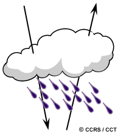
- Sistemas pasivos: Detectan la escasa radiación natural de microondas emitida por la Tierra. Dada la baja energía, requieren antenas grandes y operan con resoluciones espaciales bajas. Se aplican en meteorología (perfiles atmosféricos), hidrología (humedad del suelo) y oceanografía (hielo marino).
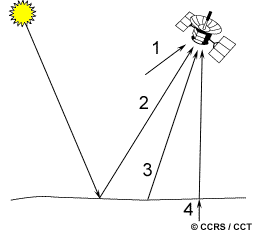
- Sistemas activos: Emiten su propia energía (pulsos) hacia la superficie y miden la retrodispersión (backscatter). Al generar su iluminación, son completamente independientes de la luz solar o la energía térmica terrestre.
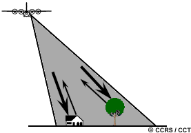
8.2 Fundamentos del radar
RADAR (RAdio Detection And Ranging) emite breves pulsos de energía enfocados direccionalmente. Mide el tiempo de retardo entre la emisión y la recepción del eco para determinar la distancia (rango) al objetivo, y la intensidad del eco para caracterizarlo.
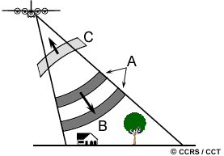
El espectro se subdivide en bandas (Ka, X, C, S, L, P). La elección de la banda define la interacción: bandas largas (L, P) penetran el dosel forestal; bandas cortas (X, C) interactúan con el ápice foliar o superficies expuestas.
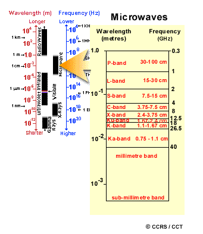
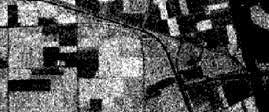
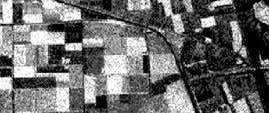
La polarización (orientación del campo eléctrico) es crítica. Los pulsos pueden transmitirse y recibirse horizontal (H) o verticalmente (V), generando polarizaciones equivalentes (HH, VV) o cruzadas (HV, VH). Cada combinación ofrece respuestas únicas del terreno.
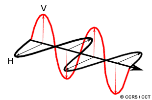
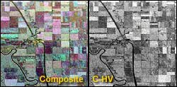
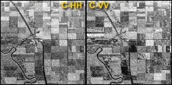
8.3 Geometría de visión y resolución espacial
El radar posee una geometría de visión lateral (side-looking). * Azimut: Dirección paralela al avance de la plataforma. * Rango: Dirección transversal y ortogonal al avance.
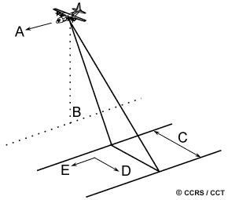
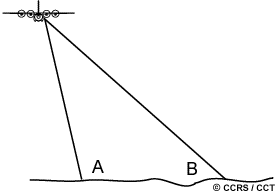
El ángulo de incidencia se forma entre el haz y la normal del terreno. El radar mide directamente la distancia en rango oblicuo (slant range), que difiere geométricamente de la proyección horizontal real en el terreno (ground range).
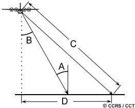
La resolución espacial del radar es bidimensional: 1. Resolución en rango: Depende de la longitud del pulso. Objetos muy cercanos en la dirección transversal se confunden si su separación es menor a la mitad de dicha longitud.
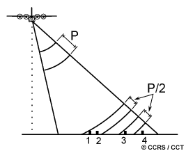
- Resolución en azimut: Dictada por la amplitud angular del haz. Físicamente, requeriría antenas kilométricas en el espacio para mantener resolución a grandes distancias.
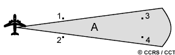
Para resolver esto, se emplea el Radar de Apertura Sintética (SAR), que registra el historial Doppler del eco mientras la plataforma avanza, simulando matemáticamente una antena de inmensa longitud y logrando resoluciones finas y uniformes.
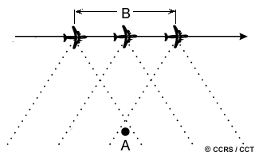
8.4 Distorsiones geométricas
La reconstrucción desde el tiempo de vuelo hacia la imagen induce severas distorsiones debido a la topografía:
- Distorsión de rango oblicuo: Comprime artificialmente la escala en la zona cercana de la imagen.
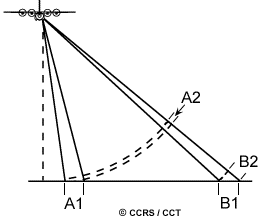
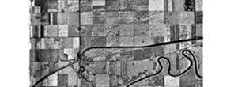
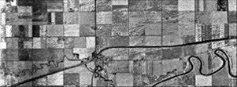
- Escorzo (Foreshortening): Las laderas enfrentadas al sensor devuelven el eco prematuramente, acortándose drásticamente en la imagen y viéndose muy brillantes.
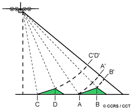
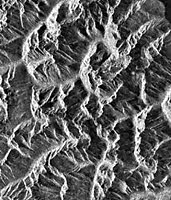
- Abatimiento (Layover): Caso extremo donde la cima de la montaña refleja la señal antes que la base, provocando que el relieve parezca “caer” hacia el sensor.
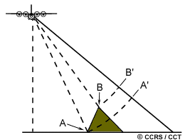
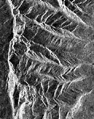
- Sombra (Shadow): Zonas tras el relieve (pendientes de espaldas) donde el haz no logra iluminar, resultando en áreas completamente negras (sin datos).
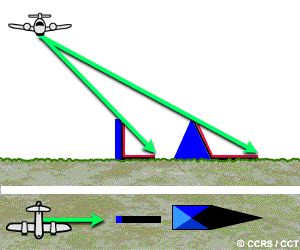
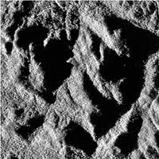
8.5 Interacción con el objetivo y apariencia
La retrodispersión SAR depende de tres variables críticas:
- Rugosidad superficial: En relación a la longitud de onda. Superficies lisas (agua, vías) generan reflexión especular (oscuras); superficies rugosas (bosques) generan dispersión difusa (brillantes).
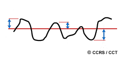
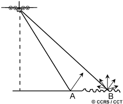
- Relación geométrica: Evaluada mediante el ángulo de incidencia local. Las geometrías a 90° (estructuras urbanas) actúan como reflectores de esquina, retornando toda la energía en un destello brillante. La orientación del terreno respecto al haz (dirección de mirada) altera radicalmente el contraste.
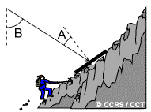
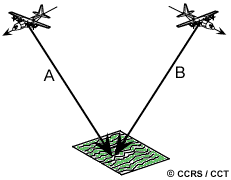
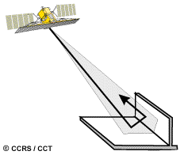
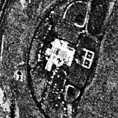
- Humedad (constante dieléctrica): La humedad incrementa la reflectividad radar. En condiciones extremadamente secas, la microonda puede penetrar la superficie, revelando estructuras subsuperficiales u originando interacciones de volumen (como el rebote múltiple dentro del follaje de un bosque).
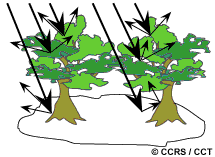
8.6 Propiedades de las imágenes
Las imágenes SAR exhiben un granulado característico llamado Speckle, derivado de la interferencia de ondas dentro de un píxel.
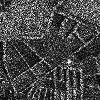
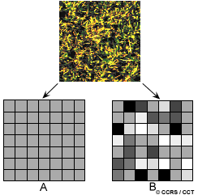
Para reducirlo, se utiliza el procesamiento Multi-look (promediando vistas durante la adquisición) o el filtrado espacial post-procesamiento (promedios locales que suavizan la imagen pero degradan levemente la resolución espacial).
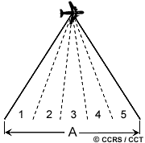
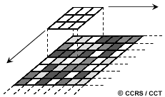
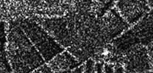
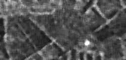
Otros ajustes vitales incluyen la corrección del patrón de antena (para compensar la caída natural de energía en el rango lejano) y la calibración absoluta, esencial para convertir niveles digitales en valores de retrodispersión físicamente comparables.
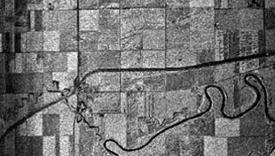
8.7 Aplicaciones avanzadas
- Radargrametría (Estéreo SAR): Uso de adquisiciones con ángulos solapados para visión tridimensional.
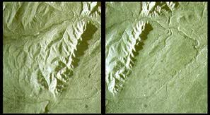
- Interferometría SAR (InSAR): Explotación de la coherencia y diferencia de fase para mapeo topográfico y detección de subsidencia milimétrica.
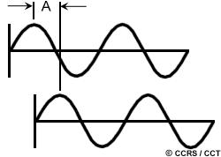
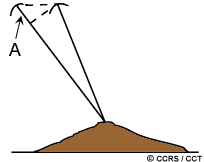
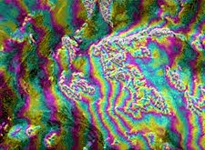
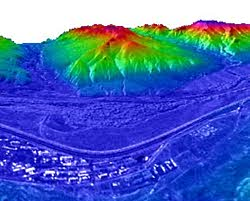
8.8 Polarimetría de radar
Consiste en el análisis completo del estado de polarización de la onda dispersada. Radares totalmente polarimétricos adquieren y comparan fases y amplitudes de los 4 canales (HH, HV, VH, VV).
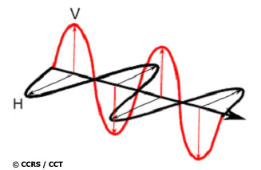
Esta síntesis permite derivar firmas de polarización e imágenes compuestas que potencian enormemente la capacidad algorítmica para discriminar cultivos, hielos marinos y texturas forestales.
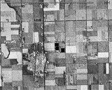
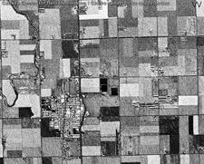
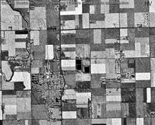
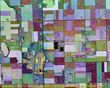
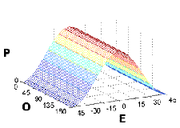
8.9 Sistemas de radar aero y espaciales
Los radares aerotransportados ofrecen agilidad, pero sus rangos de incidencia muy variables a través de la franja acentúan los artefactos. Los sistemas satelitales observan con ángulos consistentes desde grandes altitudes, garantizando geometría uniforme.
Sistemas históricos y operativos destacados: * Aéreos: Convair-580 C/X (Canadá), sistemas STAR (hielo) y AirSAR de la NASA (L, P, C multi-polarizado).

- Espaciales: SEASAT (primer SAR civil), misiones europeas ERS-1/2, la japonesa JERS-1, y el avanzado sistema canadiense RADARSAT, con capacidad de direccionamiento de haz y modos escalables.